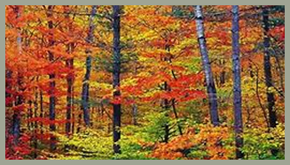

FLORESTA TEMPERADA

Vegetação
A vegetação da floresta temperada é formada principalmente por árvores decíduas, que perdem as folhas no outono, como carvalhos, faias e bordos. Também há coníferas em algumas áreas. Essas florestas têm solo fértil e boa diversidade de plantas, incluindo arbustos e herbáceas, adaptadas às estações bem definidas do ano: primavera, verão, outono e inverno.

Fauna
A fauna da floresta temperada inclui cervos, ursos, raposas, lobos e várias aves. Muitos animais possuem pelagem densa e hibernam para enfrentar o inverno rigoroso. Répteis, anfíbios e insetos também têm presença marcante nesse ecossistema.

Clima
O clima da floresta temperada é marcado por quatro estações bem definidas: primavera, verão, outono e inverno. Os verões são moderados e os invernos frios, com temperaturas que podem chegar abaixo de zero. A chuva é distribuída ao longo do ano, mantendo o solo fértil e a vegetação diversa.

Importância Ecológica
Regulação climática: As florestas temperadas ajudam a regular o clima, armazenando grandes quantidades de carbono e influenciando os padrões climáticos globais.
Biodiversidade: São habitats ricos em vida, com grande variedade de espécies vegetais e animais, sendo fundamentais para o equilíbrio ecológico.